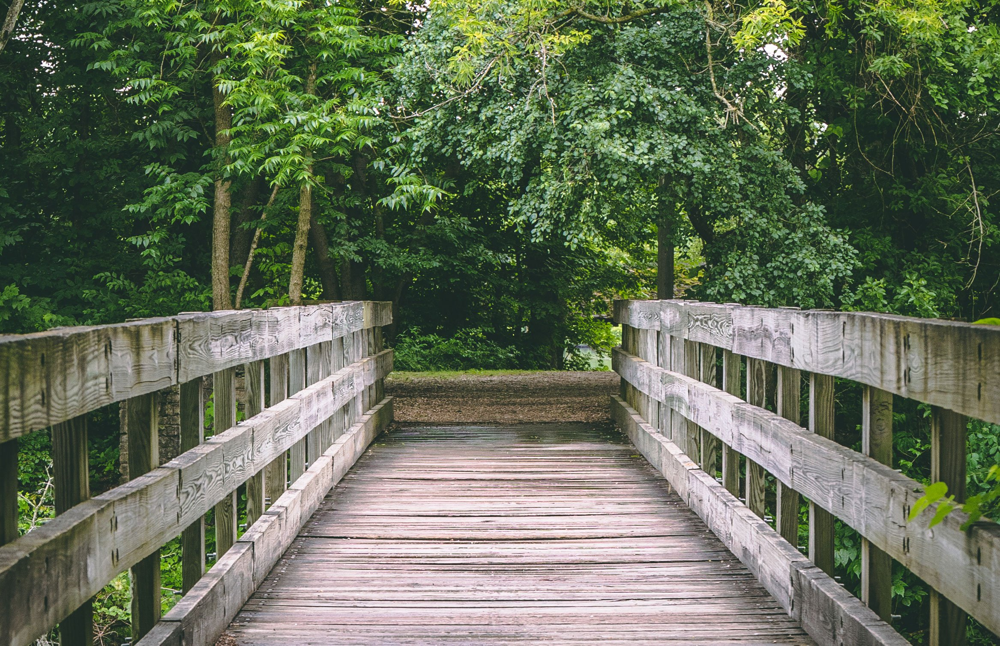

- Hiking
Pacific trails resort has 5 miles of hicking trails and is adjacent to a state park. Go it alone or join one of our guided hikes
-
Kayaking
Ocena kayaks are avaliable for guest use.
-
Bird Watching
While anytie is a good time for birst watching at Pacific Trails, we offer guided birdwatching trips at sunrise several times a week.